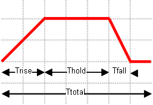

|
|
TimeSignal Object
Reset
Resets all internal values to their default settings.
Name ( name signalName )
Sets the name of the time signal.
Id( int id )
Sets a unique identifier for the imported ASCII signal data. Therefore signals pointing to the same imported data (e.g. created via transform and copy) share the same id. Please use GetNextId to retrieve a free id.
Rename ( name oldName, name newName, name problemType )
Renames the time signal named oldName to newName. The third parameter characterizes the problem type to which the signal belongs. Admissible values for problemType are "High Frequency" or "Low Frequency".
Delete ( name signalName, name problemType )
Deletes an existing time signal named signalName. The second parameter characterizes the problem type to which the signal belongs. Admissible values for problemType are "High Frequency" or "Low Frequency".
Create
Creates the time signal with the previously applied settings.
FileName ( string name )
name specifies the ASCII signal file and path.
UseCopyOnly ( bool flag )
The ASCII signal file is copied once into the project folder. Hence changes of the originally imported file do not affect the defined signal.
Fmin ( double fmin )
Fmax ( double fmax )
Sets the frequency range for a Gaussian excitation function. To ensure accurate results the signal's frequency range has to fit inside the project's frequency range.
Ttotal ( double ttotal )
Sets the total duration of the time signal.
This setting is used for the "Rectangular", "Smooth step", "Sine step" and "User" defined signal and ignored for "Gaussian" impulses and for "Import" signal types.
Trise ( double trise )
Sets the duration in which the time signal rises to its maximum. This setting is used only for the "Rectangular" signal type.
Thold ( double thold )
Sets the duration in which the time signal holds its maximum value. This setting is used only for the "Rectangular" signal type.
Tfall ( double tfall )
Sets the duration in which the time signal falls from its maximum value to zero. This setting is used only for the "Rectangular" signal type.

Rectangular signal type
Voffset ( double voffset )
Sets the vertical offset of the time signal. This setting is used only for the sine function (signal type "Sine").
AmplitudeRisePercent ( double amplituderisepercent )
Sets the amplitude rise (in per cent notation) of the time signal, which completely defines the slope and grow rate of the signal together with the Trise parameter. This setting is used only for the smooth step function (signal type "Smooth step").
RiseFactor ( double risefactor )
Sets the duration in which the time signal rises to its maximum. This setting is used only for the "Smooth step" and "Sine step" signal type.
ChirpRate ( double chirp_rate )
Sets the rate of frequency increase (or decrease, if negative) to define a linearly varying instantaneous frequency. The chirp rate is therefore expressed in frequency unit / time unit. This setting is used only for the "Sine step" signal type.
Frequency ( double frq)
Sets the frequency of the sine function (depending on the predefined frequency unit). This setting is used only for signal type "Sine", "Sine step".
Phase ( double phase )
Sets the phase of the sine step function.
Amplitude ( double amplitude )
Sets the amplitude of the double exponential function.
StartAmplitude ( double astart )
EndAmplitude ( double aend )
Sets the start and end amplitude of the exponential step function. This type is available only for low frequency simulations.
SignalType ( enum sType )
Sets the type of the signal.
sType can have one of the following values:
|
”Gaussian” |
Gaussian excitation function within the given frequency range: Please note that for proper broadband S-Parameter calculations the Gaussian pulse should always be used. To ensure accurate results the signal's frequency range has to fit inside the project's frequency range. Relevant only for high frequency calculations. |
|
”Rectangular” |
Rectangular excitation function: Please note that for proper broadband S-Parameter calculations the Gaussian pulse should always be used. To ensure accurate results the signal's timing settings has to fit inside the project's frequency range. |
|
"Sine step" |
Sine function with smoothed transition phase from 0 to maximum amplitude value. A signal in which the instantaneous frequency linearly varies with time (linear chirp) is also possible specifying the chirp rate (CR), i.e. the rate of frequency increase (or decrease, if negative). |
|
"Sine" |
Sine function. |
|
"Smooth step" |
Smoothed step (with controlled slope) excitation function: Please note that for proper broadband S-Parameter calculations the Gaussian pulse should always be used. To ensure accurate results the signal's timing settings has to fit inside the project's frequency range. |
|
"Constant" |
Constant excitation function: This signal type yields the same constant value at each time point. |
|
"Double exponential" |
Enables you to define a double exponential excitation using the following expression. f (t) = A (exp (-t / B) - exp (-t / C)) |
|
"Impulse" |
Enables you to define an impulse excitation. A highest required output frequency (Fmax) should be specified to define the shape of this signal. This signal is centred about zero. It starts at t = -6.25 / Fmax and ends at 6.25 / Fmax. Outside this range, the signal is zero. |
|
"User" |
User defined excitation function: A user defined function can be created by writing a VBA-function with the name ExcitationFunction inside a file named Projectname\Model\3D\signal_name.usf for an arbitrary signal name or Projectname\Model\3D\Model.usf for the reference signal name. Please note that for proper broadband S-Parameter calculations the Gaussian pulse should always be used. To ensure accurate results the signal's timing settings has to fit inside the project's frequency range. |
|
"Import" |
Import of an ASCII table: The ASCII file containing a table of time and signal values has to be stored in a file named Projectname\Model\3D\signal_name.isf. |
MinUserSignalSamples ( int minsamples )
Sets the minimum number of samples to be generated for the user defined excitation function. This number should be a positive one and smaller (for algorithmic reason) than 30000.
Periodic ( bool bPeriodic )
Relevant only for imported ASCII tables. Set bPeriodic to True to apply the imported ASCII table periodically.
ProblemType ( enum sType )
Specifies the application where the signal belongs to.
sType can have the value "High Frequency" or "Low Frequency".
ExcitationSignalAsReference ( name signalName, name problemType )
Selects the given excitation signal signalName als default / reference signal for all following simulations. The second parameter characterizes the problem type to which the signal belongs. Admissible values for problemType are "High Frequency" or "Low Frequency".
ExcitationSignalResample ( name signalName,
double tstep, name problemType )
Generates a signal file Projectname\Results\signalName.sig within the adressed time intervall sampled with the given timestep tstep. The last parameter characterizes the problem type to which the signal belongs. Admissible values for problemType are "High Frequency" or "Low Frequency".
GetNextId integer
Returns the next free unique ID to for a new signal source.
Ttotal (0.0)
Trise (0.0)
Thold (0.0)
Tfall (0.0)
Fmin (0.0)
Fmax (0.0)
Voffset (0.0)
AmplitudeRisePercent (0.0)
ChirpRate (0.0)
RiseFactor (0.0)
Frequency (5.0)
' creates a Gaussian excitation function
With TimeSignal
.Reset
.Name "GaussianSignal"
.SignalType "Gaussian"
.ProblemType "High Frequency"
.Fmin "0.0"
.Fmax "1000.0"
.Create
End With
' creates a (rectangular) step function
With TimeSignal
.Reset
.Name "signal1"
.SignalType "Rectangular"
.ProblemType "High Frequency"
.Ttotal "2.0"
.Trise "0.0"
.Thold "1.0"
.Tfall "0.0"
.Create
End With
' creates a sine function with frequency f=3.0 and vertical offset v=1.0
With TimeSignal
.Reset
.Name "sine_signal"
.SignalType "Sine"
.ProblemType "Low Frequency"
.Ttotal "10.0"
.Voffset "1.0"
.Frequency "3.0"
.Create
End With
' creates a sine step function with frequency f=3.0
With TimeSignal
.Reset
.Name "mysignal"
.SignalType "Sine step"
.ProblemType "High Frequency"
.Ttotal "10.0"
.Phase "90"
.Frequency "3.0"
.RiseFactor "5"
.Create
End With
' creates a smoothed step function with 80% rise amplitude
With TimeSignal
.Reset
.Name "mysignal"
.SignalType "Smooth step"
.ProblemType "High Frequency"
.Ttotal "10.0"
.AmplitudeRisePercent "80.0"
.RiseFactor "2"
.Create
End With
' creates a user-defined excitation function
With TimeSignal
.Reset
.Name "mysignal"
.SignalType "User"
.ProblemType "Low Frequency"
.Ttotal "2.0"
.Create
End With
' creates an imported excitation function
With TimeSignal
.Reset
.Name "imported_signal"
.SignalType "Import"
.ProblemType "High Frequency"
.Create
End With
| CST Studio Suite 2022 |
|